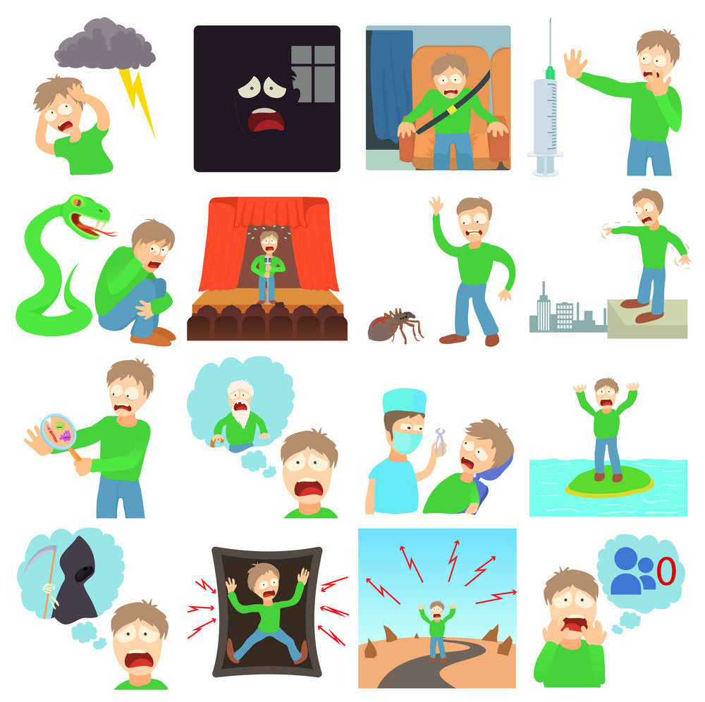
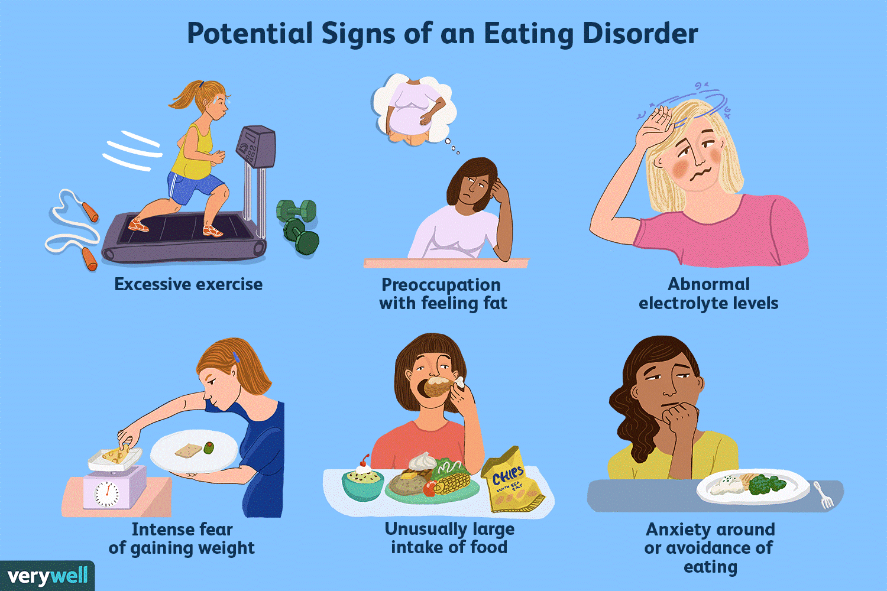
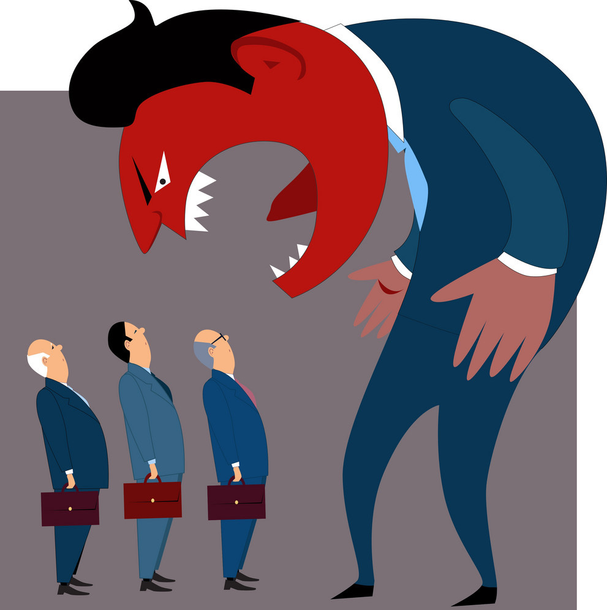

Improving Mental Health Literacy among Children
Definition
Mental health includes our emotional, psychological, and social well-being. It affects how we think, feel, and act. It also helps determine how we handle stress, relate to others, and make choices. Mental health is important at every stage of life, from childhood and adolescence through adulthood. Over the course of your life, if you experience mental health problems, your thinking, mood, and behavior could be affected. Many factors contribute to mental health problems
Early warning sign of poor mental health
- Eating or sleeping too much or too little
- Pulling away from people and usual activities
- Having low or no energy
- Feeling numb or like nothing matters
- Having unexplained aches and pains
- Feeling helpless or hopeless
- Smoking, drinking, or using drugs more than usual
- Feeling unusually confused, forgetful, on edge, angry, upset, worried, or scared
- Yelling or fighting with family and friends
- Experiencing severe mood swings that cause problems in relationships
- Having persistent thoughts and memories you can't get out of your head
- Hearing voices or believing things that are not true
- Thinking of harming yourself or others
- Inability to perform daily tasks like taking care of your kids or getting to work or school
How to look after your mental health
- Talk about your feelings.
- Keep active.
- Eat well.
- Drink sensibly.
- Keep in touch.
- Ask for help.
- Take a break.
- Do something you're good at.
- Accept you who are
- Care for others
Why it’s Important to care for your mental health
mental health is important because it's a vital part of your life and impacts your thoughts, behaviors and emotions. Being healthy emotionally can promote productivity and effectiveness in activities like work, school or caregiving.
The emotional well-being of children is just as important as their physical mental health. Child changes often act as motivators: moving house or school or birth for example. Some kids who start school are excited to make friends and do new activities, but there may be some who feel stressed or scared.
Phobias - is the persistent fear of a situation, activity, or thing that causes one to want to avoid it. Phobia is trivial, intense and constant fear in certain situations, things, situations or people. Excessive and unreasonable desire to avoid fear is a major component of this disease.

Eating Disorders - Eating disorders commonly coexist with other conditions, such as anxiety disorders, substance abuse, or depression. any of a range of psychological disorders characterized by abnormal or disturbed eating habits (such as anorexia nervosa).

Domestic Violence & Abuse - Domestic violence (also named domestic abuse or family violence) is violence or other abuse in a domestic setting, such as in marriage or cohabitation. any behavior the purpose of which is to gain power and control over a spouse, partner, girl/boyfriend or intimate family member. Abuse is a learned behavior; it is not caused by anger, mental problems, drugs or alcohol, or other common excuses.

Depression - Depression (major depressive disorder) is a common and serious medical illness that negatively affects how you feel, the way you think and how you act , think and behave and can lead to a variety of emotional and physical problems.
Loneliness - is a complex and usually unpleasant emotional response to isolation. Loneliness typically includes anxious feelings about a lack of connection or communication with other beings, both in the present and extending into the future.

Anger Issues - Anger issues are a natural , instinctive response to threats , causing you to say or do things you regret. a problem one has controlling his/her temper over trite and trivial concerns, usually resulting in broken walls and furniture as well as lots of swearing.

Assessment of Mental Health
A mental health assessment is designed to diagnose mental health conditions such as anxiety, depression, schizophrenia, postnatal depression, eating disorders and psychotic illnesses
a mental health assessment if you have received a legal charge of disorderly conduct, domestic violence or any incident that involved an altercation that resulted in law enforcement investigating. Incidents such as this could involve any number of mental health conditions.
Click to see sources